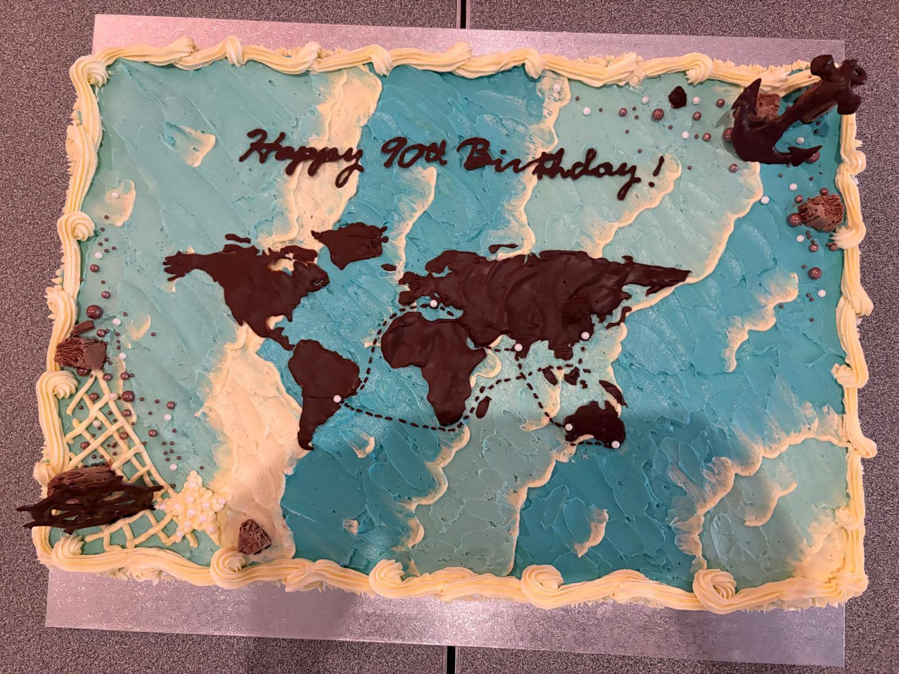
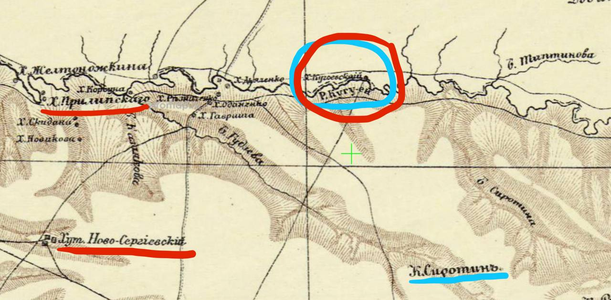
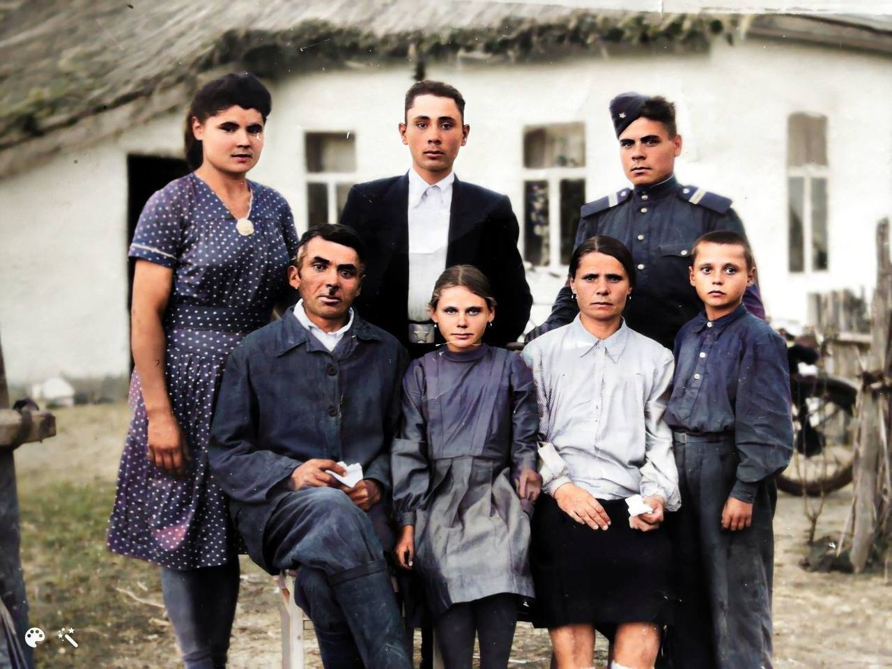

Кейсы успешного поиска
Как автосомные и Y-DNA тесты помогли найти места исхода предков и живых родственников, три кейса, от органичной случайной находки до многолетней целевой работы.
Архипов / Arhipoff Решено
Родственники найдены через 100 лет: Туркестан → Китай → Бразилия → Австралия

Сухенко Решено
Место исхода и девичья фамилия прабабушки установлены через ДНК

Харченко В работе
Три села-кандидата на Украине · поиск с 2022 года
